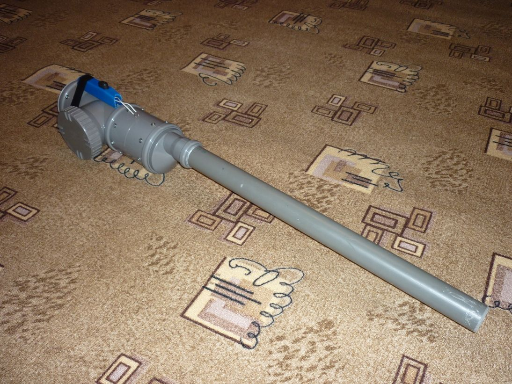
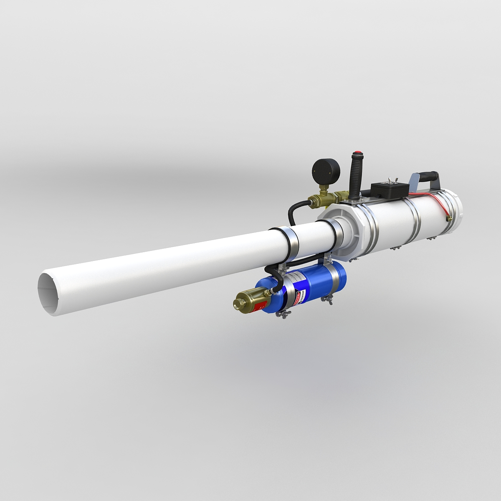
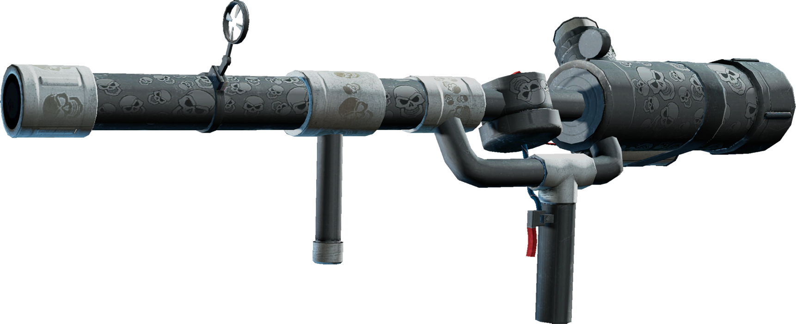
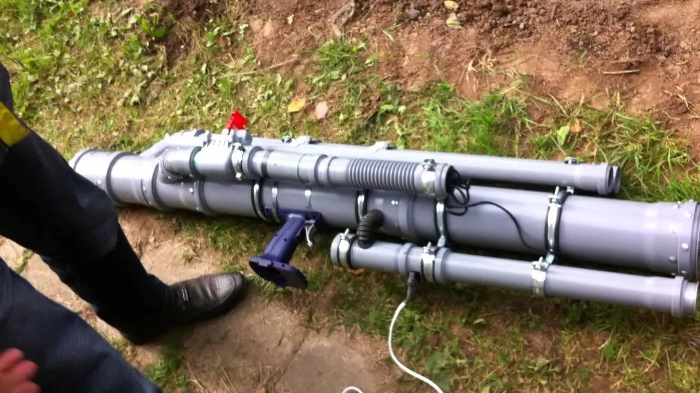
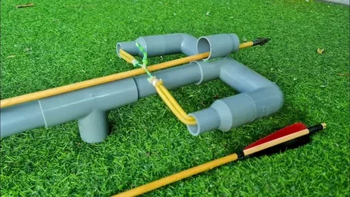
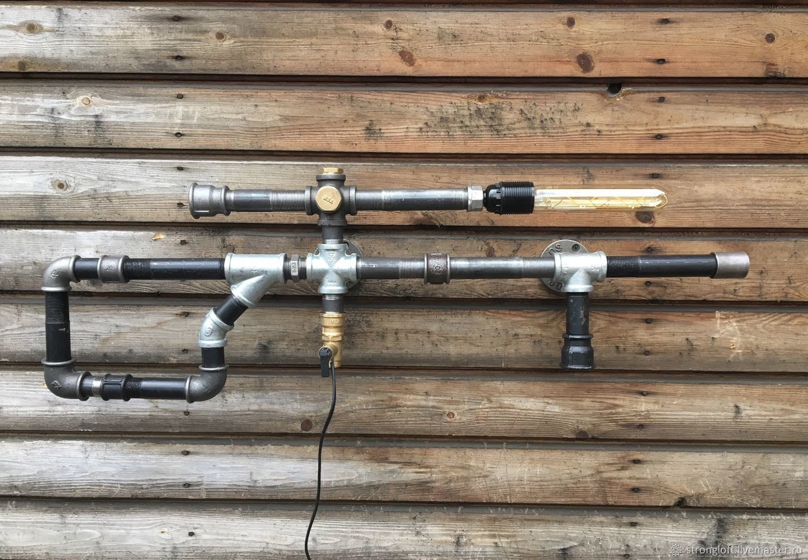
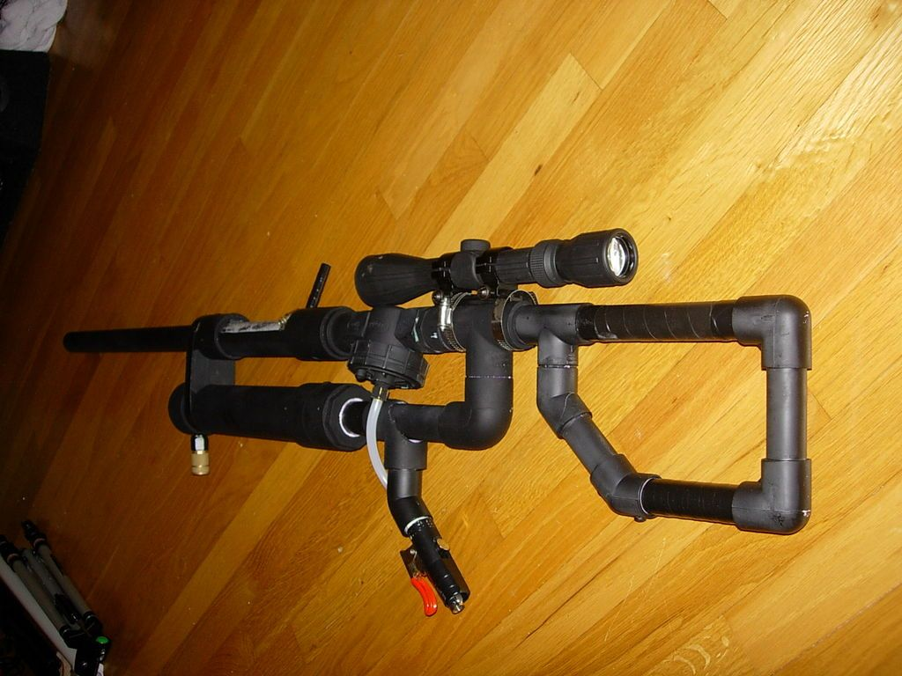
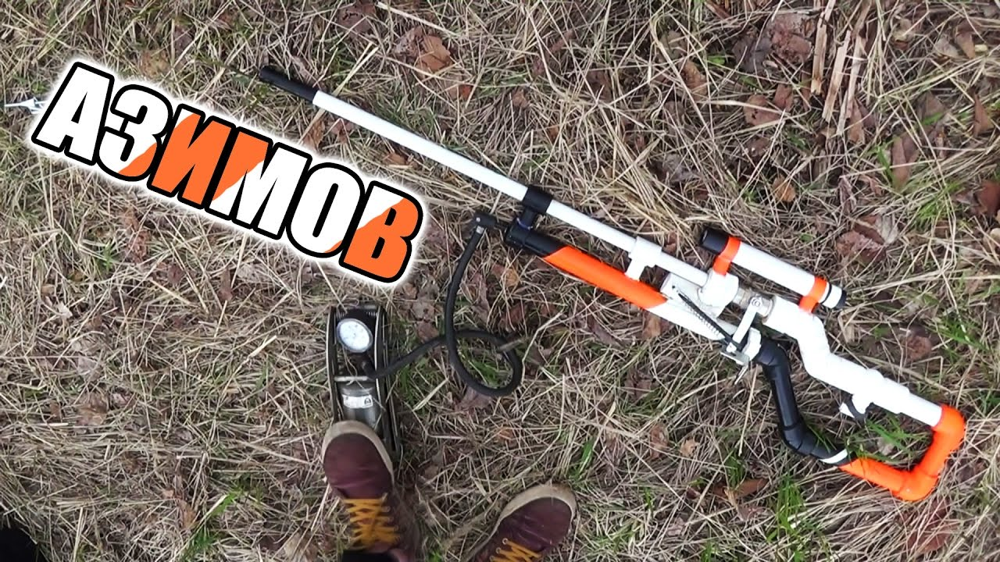
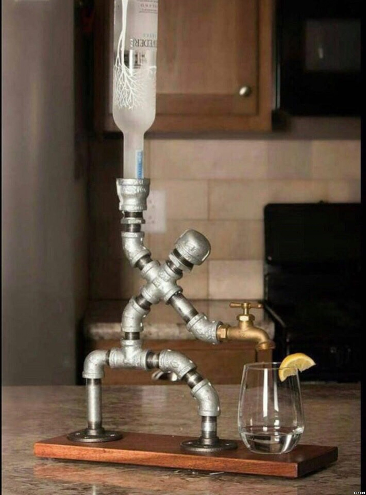
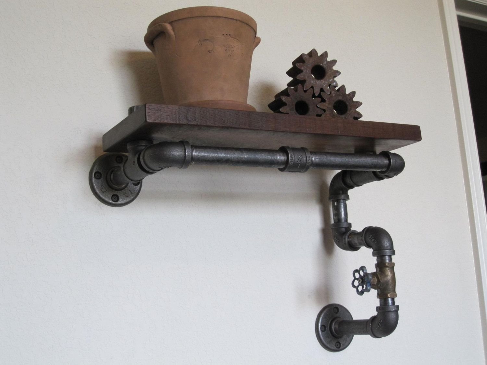

Связаться по вопросам покупки - телеграм: Infinity Lucker
«Описание товара»:
Начнём с вопросов, которые привели к дальнейшим размышлениям. А вопросы возникли в процессе выполнения домашнего задания 1 из курса HTML_CSS из гикбрейнс. Подготовительный курс.
Зачем я выполняю это задание?
Как это монитизировать и зарботать на этом?:
Для начала нужно за что то зацепиться. Зацепимся за трубы, так как у меня на работе много сантехнических труб и прочих запчастей. То что должно отправиться в помойку, списанные агригаты и прочее. Но если быть конкретнее в мышлении, то пока это сантехнические трубы.
Теперь я хочу показать три первые картинки, от которых ищем монитизацию дальше:
цена: 3500 рублей
цена: 22 000 рублей

цена: 44 000 рублей
Как это монитизировать и зарботать на этом?
В домашнем задании надо было создать страничку товара по определённому заданию. Товаром я выбрал картофелемёты. Нашёл три картинки в интернете и сделал три карточки товара.
А дальше мысль - разместить три товара на одной страничке,как я сделал выше здесь на этой странице и не делать трёх и оставаться в пределах одного хтмл документа. По сути добавляем и добавляем всё в один хтмл файл. И заработать на этом...Продавая на таком сайте картофелемёты, которые я собрал у себя на работе. вроде смешно, но нельзя откидывать этого решения. Потому что где то может найтись то случайный фанат.
Тем более мне захочется расширить ассортимиент и продолжать мастерить на работе изделия из хлама и добавлять товары на существующую страничку.
А средством связаться со мной будет контакт в телеграмме. Ссылка на мой профиль или имя в телеграмме, куда можно будет обратиться заинтересованным лицам. А самое глевное тем свмым решением мы остаёмся на этой самой страничке.
Добавляю ещё товаров на эту страничку продаж:
цена: 10 000 рублей
цена: 28 000 рублей
цена: 7 000 рублей
Теперь более менее становится понятно причём же здесь трубы...И сайты с трубами могут пожениться, если через эти сайты и странички сайтов продавать изделия из этих самых труб. Пофантазируем чем можно заполнить каталог интернет магазина по продаже чего угодно, в нашем конкретном случае - кортофелемётов и оружья из пластиковых сантехнических труб. Создать простой сайт с небольшим ассортиментом, вывеситься в интернете и ждать, когда тебе напишут и заинтересуются товаром.
Ещё нашёл труб меньшего диаметра, скрафтил на работе, положил на слад. а Теперь Добавляю ещё товаров на эту страничку продаж, и собирёмся мыслями дальше:
цена: 19 000 рублей
цена: 22 000 рублей
цена: 108 000 рублей
И снова трубы и изделия из них, это для контента. Финиш лизко.
цена: 40 000 рублей набор фигурок
цена: 12 000 рублей
цена: 8 000 рублей
Дальше я думаю концепция ясна с товарами и пора переходить к гиперссылкам. Но вернуться быстренько к товарам:
ИТОГО: 323 500 Руб
ГИПЕРССЫЛКИ:
Здесь дальше хочу разместить список из сылок и описания ресурса. А попасть в этот список можно связавшись с нами и выкупив место в списке. НЕДОРОГО!
https://pages.github.com/
GitHub Pages — это инструмент платформы GitHub, который позволяет размещать сайты в сети бесплатно.
Он принимает файлы HTML, CSS и JavaScript, находящиеся в репозитории, и создаёт из них веб-сайт, доступный любому человеку в сети.
Сайт который работает и на котором можно заработать и купить полезные вещи. Сайт который можно двигать!